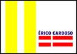
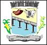

Conhecendo o Território Bacia do Paramirim Município de Érico Cardoso
| Temas das pesquisas: | Dados: |
|---|---|
| Municípios Limítrofes |
|
| Área | 735,249 km²[2022] de área |
| Altitude | Situado a 639 metros de altitude |
| Coordenadas geográficas | Latitude 13° 23’ 4” Sul; Longitude 42° 31’ 39” Oeste |
| Clima | O clima do município é semiárido |
| Temperatura Média | 25°C a 30°C |
| Vegetação | O principal bioma do município é a caatinga e o cerrado |
| Hidrografia | Botuporã é caracterizado pelos rios principais: Riacho da Rapadura, Córrego Sapiranga, Córrego Santana, Rio Riachão e o Córrego Boi Manso. A maior parte do município está inserida na bacia hidrográfica do Rio São Francisco |
| População Absoluta | 10.604 pessoas [2022] |
| População Relativa | 14,42 hab/km² [2022] |
| Principais Atividades Econômicas | Possui uma agricultura que se baseia na policultura de milho, feijão e mandioca e na criação de bovinos e aves |
| Principais Manifestações Culturais | São João, que ocorre anualmente nas praças de shows da cidade. As comunidades pertencentes a Botuporã também comemoram muitas datas festivas, como Dia das Mães, Dias dos Pais, Páscoa, Natal entre outras |
| Equipamentos Culturais |
|
| Unidades de Saúde Existentes |
|
| Esgotamento Sanitário(%) | 0,8% da população tem acesso aos serviços de esgotamento sanitário adequado(2010) |
| Áreas de APP | --- |
| IDH | 0,575 |
| Plano Diretor | --- |
Breve História do município
O Rio de Contas surgiu no século XVII, quando escravos alforriados e fugitivos fundam o povoado conhecido como “Arraial dos Crioulos”, descoberto em 1681. Este povoado, na última década daquele século, se torna um ponto de pouso para viajantes vindo de Minas Gerais e Goiás que seguiam rumo a Salvador. Entre 1715 e 1720, exploradores partem para explorar os “sertões” de Rio de Contas, descobrindo ouro no Morro do Fogo. A descoberta de ouro no Morro do Fogo atrai forasteiros para região, principalmente portugueses, mas também baianos. Então surgem os primeiros povoados e fazendas da região. Por volta de 1820, surge o Arraial do Morro do Fogo, o qual, por volta de 1840, recebeu mineradores vindos de Minas do Rio de Contas (hoje Rio de Contas), por causa da decadência da mineração lá. Esses mineradores encontram ouro naquele povoado, o qual cresceria e alcançaria algum progresso. Em vista disso, em 29 de maio de 1843, a Resolução n° 200 cria a Freguesia de Nossa Senhora do Carmo do Morro do Fogo, subordinada a Minas do Rio de Contas.
Na segunda metade do século XIX, o ouro do Morro do Fogo acaba. Como consequência, o povoado começa a se esvaziar, com seus habitantes se instalando em fazendas ao longo do Rio Paramirim ou criando núcleos populacionais agrários na região, como o Arraial de Água Quente (atual Sede de Érico Cardoso), que foi fundado e se desenvolveu rapidamente nas terras da fazenda do coronel Liberato José da Silva, em virtude da presença de águas termais, daí o nome do povoado, para onde foi transferida a sede da Freguesia do Morro do Fogo, pela Resolução provincial n° 1.460, de 23 de março de 1875. A Lei Provincial n° 1.849, de 16 de setembro de 1878, eleva a Freguesia de Nossa Senhora do Carmo do Morro do Fogo à categoria de vila, com o título de “Industrial Vila de Água Quente”, precursora do município de Paramirim. No entanto, entre 1881 e 1890, a vila estava extinta e pertencente a Minas do Rio de Contas, tendo alcançado sua emancipação em 24 de março de 1890. Em 1898, o capitão Antônio José Cardoso, abastado comerciante em Água Quente, foi nomeado seu intendente. Com a sua morte, em 1902, a sede da Industrial Vila de Água Quente é transferida para o Arraial do Ribeiro (hoje a sede de Paramirim), pela Lei estadual n.° 460, de 16 de julho daquele ano. A Lei Estadual n.º 1.659, de 5 de junho de 1962, desmembra de Paramirim o distrito de Água Quente, o qual foi elevado à condição de município, tendo sido instalado em 7 de abril do ano seguinte, data na qual se comemora o aniversário do município. A Lei Estadual nº 4.483, de 15 de julho de 1985, altera o topônimo do município de Água Quente para Érico Cardoso, em homenagem a Érico Cayres Cardoso (1918 - 1984), prefeito de Paramirim na década de 1950 e primeiro prefeito do município de Água Quente.
Fonte: Veja em Contatos| Temas da pesquisas: | Dados sobre o município de Érico Cardoso -Bahia |
|---|---|
| Bandeira e Brasão de Armas |   |
| Origem do nome | Anteriormente o nome do município era Água Quente, devido ao poço de águas termais Poção, com temperaturas aproximadas a 27°C e com vazão constante. Em 15 de julho de 1985, a Lei Estadual nº 4483 renomeia o município de Água Quente para Érico Cardoso, em homenagem a Érico Cayres Cardoso (1918 – 1984), prefeito de Paramirim na década de 1950 e primeiro prefeito do município de Água Quente. |
| Padroeira | Nossa Senhora do Carmo. |
| Legislação Ambiental Municipal |
|
| Principais fontes de água |
|
| Unidade de Conservação | Não possui. |
| Principais fontes de energia renovável | Não possui. |
| Empreendimentos minerários |
|
| Plano de Saneamento Básico | Plano Municipal de Saneamento Básico de Érico Cardoso. |
| Projetos de reciclagem | Juntamente ao lixo residencial. |
| Descarte de lixo eletrônico | Não possui. |
| Maiores impactos ambientais |
|
| Conselhos municipais |
|
| Referências |
|